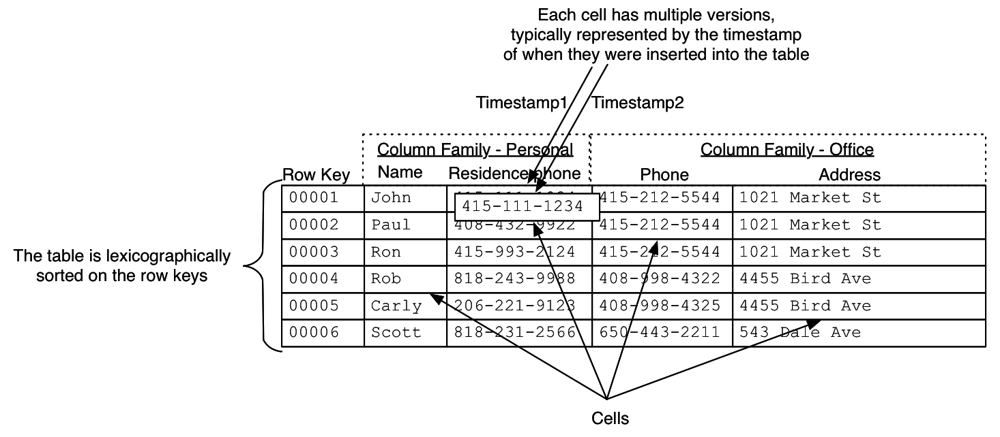

{
"firstname": "James",
"likes": ["biking", "hiking", "viking"],
"city": "Boston",
"friend": null,
"addresses":[{"state": "NSW", "city": "Sydney"},
{"state": "Vic", "city": "Melbourne"} ]
}
Node james = graphDb.createNode();
james.setProperty("name", "James");
Node harry = graphDb.createNode();
harry.setProperty("name", "Harry");
james.createRelationship(harry, FRIEND);
harry.createRelationship(james, FRIEND);
